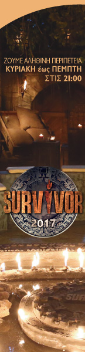

|

|
ΑΝΑΚΟΙΝΩΣΗ
Ο χρόνος έχει αρχίσει να μετρά αντίστροφα για την έναρξη του «Survivor», αφού την επόμενη Δευτέρα 21.00 το βράδυ είναι προγραμματισμένη η πρεμιέρα.
Το Survivor θα προβάλλεται από την τηλεόραση του ΣΚΑΪ και όπως έχει γίνει γνωστό, οι μισοί συμμετέχοντες θα είναι διάσημοι και οι άλλοι μισοί, πρόσωπα που απλά έκαναν αίτηση για το show.
Ο παρουσιαστής του παιχνιδιού, ο πολυταξιδεμένος, Σάκης Τανιμανίδης, και οι παίκτες είναι έτοιμοι να ζήσουν τη μεγάλη περιπέτεια της επιβίωσης.
Εικοσιτέσσερις άνθρωποι καλούνται να επιβιώσουν σε ένα εγκαταλελειμμένο νησί, για βδομάδες, έχοντας στις αποσκευές τους τα απαραίτητα ρούχα και βασική προμήθεια φαγητού.Οι διαγωνιζόμενοι θα συμμετέχουν σε δύο ομάδες.
Από αυτές τις δύο ομάδες μόνο ένας διαγωνιζόμενος θα είναι στο τέλος ο νικητής που θα λάβει το μεγάλο έπαθλο των 100.000 ευρώ.
Κατά τη διάρκεια της διαμονής τους στο νησί οι διαγωνιζόμενοι θα συμμετέχουν σε ειδικά διαμορφωμένα παιχνίδια, γεμάτα δράση, με δοκιμασίες οι οποίες θα έχουν ανταμοιβή την ασυλία, με αποτέλεσμα να δοκιμαστούν όχι μόνο οι σωματικές αντοχές τους αλλά και οι ψυχικές ώστε να διασφαλίσουν μια θέση στο παιχνίδι.Αυτό θα έχει ως αποτέλεσμα μια δραματική κορύφωση εξαιτίας των εβδομαδιαίων ελλείψεων.
Δεδομένου ότι πρόκειται για μία από τις μεγαλύτερες και πιο απαιτητικές εκδοχές του show, το DS SURVIVOR θα δίνει ραντεβού με το τηλεοπτικό κοινό τέσσερις φορές την εβδομάδα(από Κυριακή-Πέμπτη στις 21.00).
Οι τηλεθεατές θα έχουν την ευκαιρία να βλέπουν πώς εξελίσσεται η καθημερινότητα των παικτών κατά τη διάρκεια της εβδομάδας.Με τις πιο σύγχρονες τεχνολογίες το κοινό θα είναι σε θέση να παρακολουθεί τους διαγωνιζομένους σε κάθε τους κίνηση, στην προσπάθειά τους ξεπεράσουν τα εμπόδια και τους συμπαίκτες τους, για να φτάσουν στον έναν και μοναδικό SURVIVOR.
|